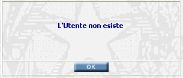
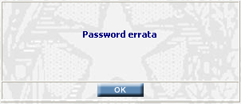

Effettuare l'Autenticazione dell’utente;
Essere in possesso dei privilegi opportuni.
LOGIN: per poter operare con l'applicazione occorre :
|
Effettuare l'Autenticazione dell’utente; | |
|
Essere in possesso dei privilegi opportuni. |
L’autenticazione dell’utente (LOGON) si basa sul riconoscimento dell'identificativo utente. L'utente pertanto, deve essere necessariamente censito sul dominio per poter accedere alla rete aziendale ed all'applicazione.
Inoltre, l'applicazione opera un controllo restrittivo sull'accesso dell'utente impedendo ad un utente di connettersi contemporaneamente più volte dalla stessa o da qualsiasi altro posto di lavoro.
Dopo la fase di autenticazione, all'utente viene assegnato un ruolo (definito dall'amministratore dell'applicazione per quell'utente) che definisce le funzionalità alle quali è abilitato.
LE MASCHERE VIDEO
Appena si apre il browser (Internet Explorer) e si digita l’esatto indirizzo Internet (a seconda del distretto di appartenenza, es. http://139.71.192.45:8080/ login.jsp) si accede alla pagina iniziale del Sistema che avvia la fase di riconoscimento dell’utente o fase di Login:
COME FARE PER ...
| Effettuare la fase di LOGIN al sistema: |
L’utente dovrà inserire il proprio codice nel campo “Utente” e la propria password nel campo “Password”.
N.B. entrambi i campi descritti sono sensibili alle lettere maiuscole e ad eventuali spazi vuoti, pertanto prestare attenzione nella fase inserimento.
Una volta compilati i campi richiesti, cliccare sul pulsante: ; A questo punto sarà effettuato un controllo sui dati inseriti e, se sono stati digitati correttamente, si potrà accedere al Sistema.
N.B. la struttura dei menù e le funzionalità del Sistema sono visualizzate in modo differente a seconda della tipologia di utente che effettua il Login. Ogni gruppo di utenti ha quindi un diverso tipo di accesso a seconda delle mansioni che gli sono state assegnate.
ATTENZIONE: La prima volta che l'utente effettua il login oppure quando è stata resettata, la Password da inserire è uguale a quanto inserito nel campo UTENTE; a questo punto cliccando sul pulsante: il sistema visualizzerà la maschera di Cambio Password.
CAMPI
I campi necessari ad effettuare il Login ed a cambiare la password sono i seguenti:
| NOME | DESCRIZIONE |
| Utente | Compilare il campo con il proprio Identificativo Utente |
| Password | Compilare il campo con la propria password |
BOTTONI
|
COMANDI |
DESCRIZIONE |
|
|
A fronte di tale comando, sarà effettuato un controllo sui dati inseriti e, se sono stati digitati correttamente, si potrà accedere al Sistema. |
CONTROLLI
|
A fronte della pressione del bottone , sarà effettuato un controllo sui dati inseriti; |
nel caso di eventuali errori il sistema visualizza, a secondo dell'errore, i seguenti messaggi:

oppure

Se il sistema non riscontrerà errori verrà visualizzata, a secondo di quale modulo applicativo di Sies stiamo usando, la PAGINA INIZIALE di SIEP, SIUS o dell'AMMINISTRAZIONE.